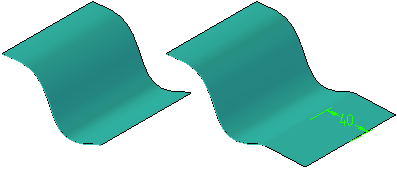
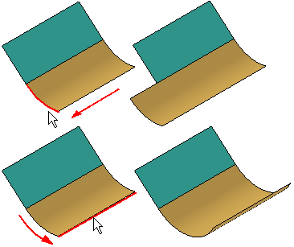
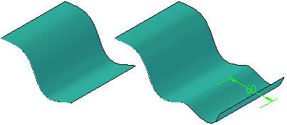

Extend Surface command bar
- Main Steps
-
- Select Edges Step
-
Defines the edge of the surface that you want to extend. You can select one or more edges.
- Extent Step
-
Defines the distance you want to extend the surface. You can define the distance dynamically using the cursor or type a value.
- Finish/Cancel
-
This button changes function as you move through the feature construction process. The Finish button constructs the feature using input provided in the other steps. Once you construct the feature, you can edit it by re-selecting the appropriate step on the command bar. The Cancel button discards any input and exits the command.
- Selecting Edges Options
-
- Linear Extent
-
Specifies that the extended portion of the surface will be linear and tangent with respect to the input face. This option is not available for analytic surfaces.

- Curvature Continuous
-
Specifies that the extended surface will continue the natural curvature of the input face. For example, if the input surface is linear with respect to the edge you select, the extension will be linear. If the input surface is radial with respect to the edge you select, the extension will be radial. If the input surface is based on a b-spline curve with respect to the edge you select, the extend feature is both tangent to and matches the radius of curvature of the existing surface.

- Reflective Extent
-
Specifies that the extended portion of the surface will be a reflection of the input surface. This option is not available for analytic surfaces.

- Select
-
Sets the method of selecting the edge you want to extend.
-
Edge—Allows you to select an edge on the input surface.
-
Chain—Allows you to select a set of edges by selecting one of the edges in the chain. To select a chain of edges, the edges must be tangent.
-
- Deselect (x)
-
Clears the selection.
- Accept (check mark)
-
Accepts the selection.
- Extent Step Options
-
- Extend To
-
Extends to selected key point entity.
- Finite Extent
-
Specifies the extent by distance units.
- Distance
-
Sets the distance to extend the surface.
- Other command bar Options
-
- Name
-
Displays the feature name. Feature names are assigned automatically. You can edit the name by typing a new name in the box on the command bar or by selecting the feature and using the Rename command on the shortcut menu.